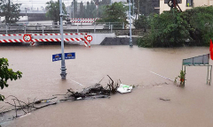

Trang Chủ
Góc Nhìn
Thế Giới
Thời Sự
Thời Sự
Phố cổ Hội An ngập nửa mét
QUẢNG NAM Nước lũ dâng cao khiến nhiều tuyến phố ven sông Hoài và hàng trăm nhà cổ ở Hội An ngập nửa mét, là mức ngập lớn nhất từ đầu năm.
Ông Hoàng Minh làm Thứ trưởng Bộ Khoa học và Công nghệ
Ông Hoàng Minh, Giám đốc Học viện Khoa học, Công nghệ và Đổi mới sáng tạo, được Thủ tướng bổ nhiệm giữ chức Thứ trưởng Bộ Khoa học và Công nghệ.
Đường sắt bị chia cắt vì mưa lũ

Mưa lớn, nước lũ dâng cao khiến nhiều đoạn đường sắt qua tỉnh Thừa Thiên Huế bị ngập sâu , 6 đoàn tàu khách đang phải dừng chờ ở các ga dọc tuyến.